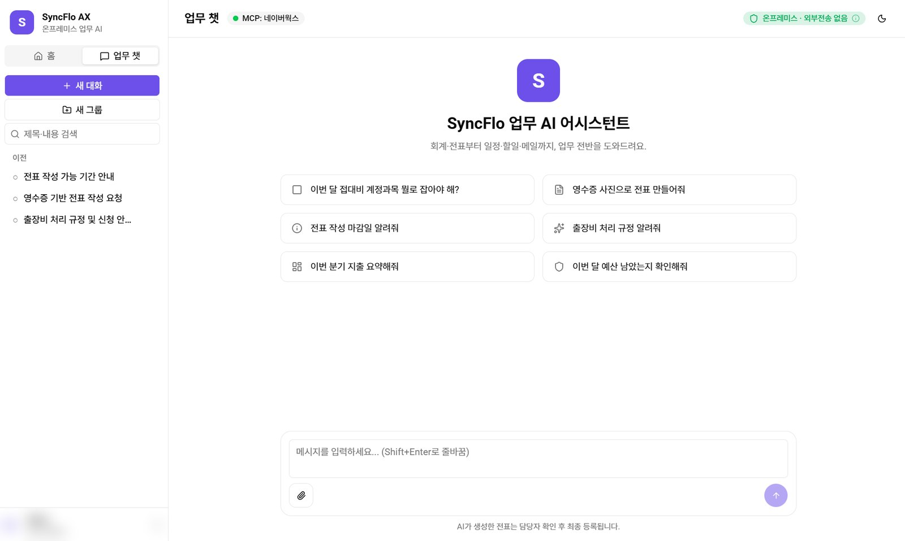
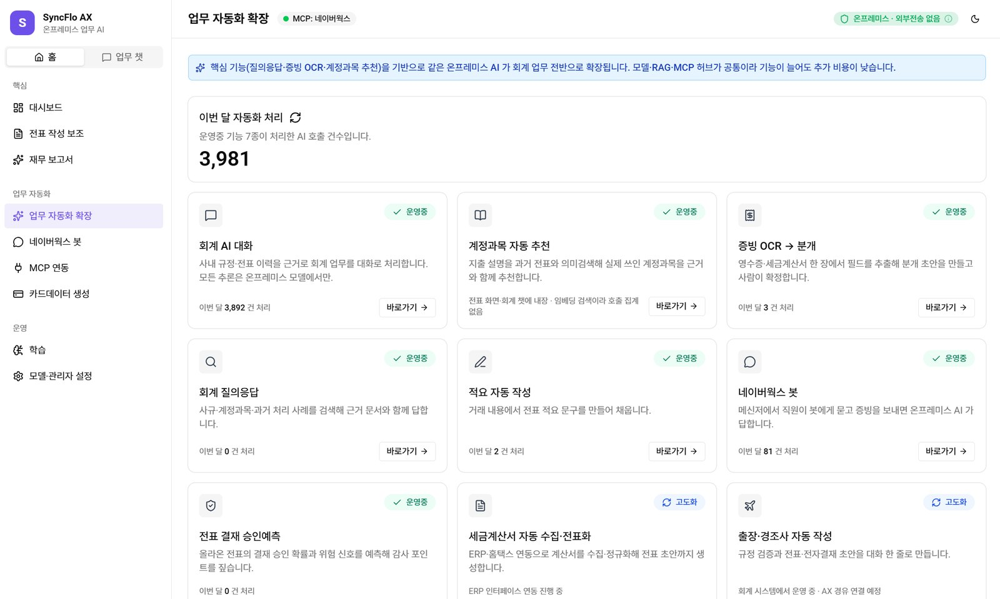
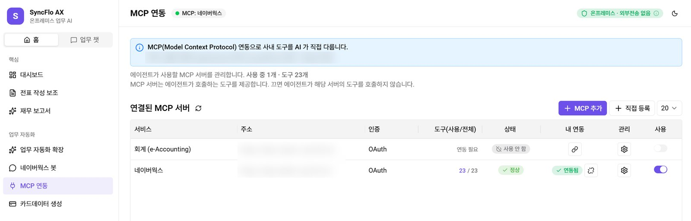
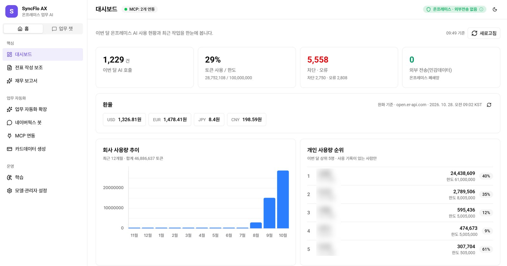
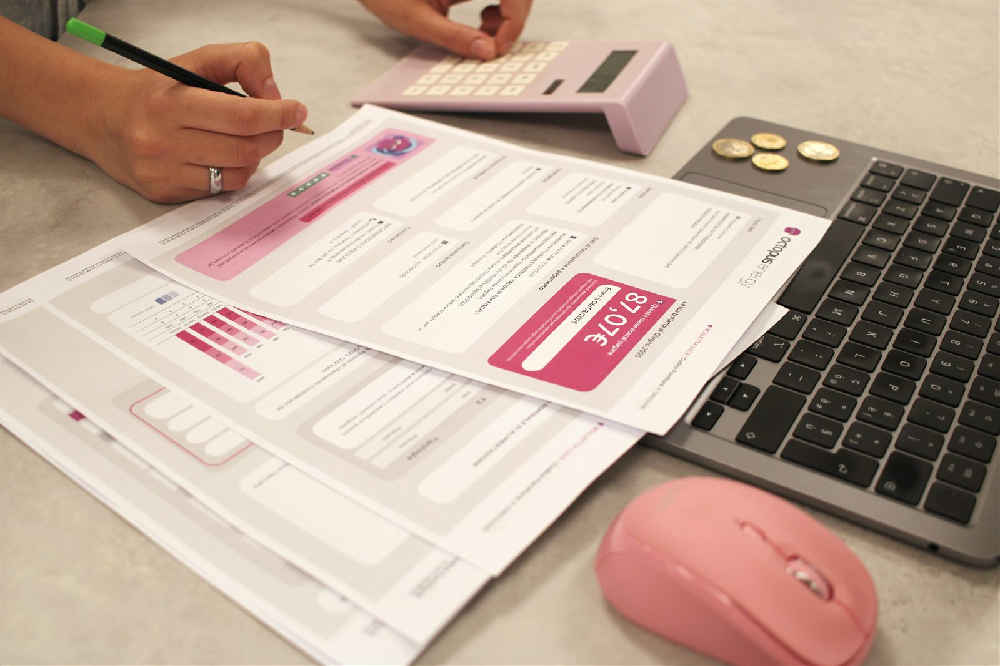

BACKGROUND · 배경
SyncFlo 전자전표
전표와 증빙은 SyncFlo에, 규정과 문의 내역은 다른 문서와 도구에 나뉘어 있었습니다.
전자전표에서 시작한 AX 프로젝트
기존 업무 시스템을 바꾸지 않고 SyncFlo와 사내 문서·업무 도구를 한곳에서 연결하는 프로젝트입니다. 현재는 전자전표 기반 회계 업무부터 구현하고 있습니다.
업무 챗MCP: 네이버웍스
온프레미스 · 외부전송 없음3월에 거래처 식사비 결제한 건, 계정과목 뭘로 잡아야 해?
거래처 식사비는 접대비(판매비와관리비)로 처리하면 돼요. 직원끼리 먹은 거라면 복리후생비인데, 이번 건은 거래처 접대라 접대비예요.
근거: 사규 제12조 접대비 처리 기준 · 유사 과거 전표 5건
3만 원이 넘으면 세금계산서나 카드전표를 꼭 보관해야 해요.
AI가 만든 전표는 담당자 확인 후 최종 등록됩니다.
SyncFlo의 카드 내역, 세금계산서, 전표 업무에서 반복되는 확인과 입력을 먼저 줄이고, 검증한 방식을 다른 사내 업무로 넓히는 프로젝트입니다.
전자전표 솔루션 먼저 보기BACKGROUND · 배경
전표와 증빙은 SyncFlo에, 규정과 문의 내역은 다른 문서와 도구에 나뉘어 있었습니다.
TEAM INSIGHT · 인사이트
규정 찾기, 영수증 입력, 계정과목 판단을 위해 여러 자료와 담당자를 확인해야 했습니다.
DIRECTION · 방향
범위가 명확한 회계 업무로 먼저 검증하고, 같은 방식을 다른 사내 업무로 확장합니다.
규정은 문서에서 찾고, 전표는 SyncFlo에서 확인하고, 모르는 내용은 담당자에게 물어야 했습니다. 같은 업무 안에서도 여러 화면과 자료를 오가는 시간이 반복됐습니다.
출장비 한도나 접대비 기준을 보려면 사규 문서를 직접 찾아봐야 했습니다.
영수증의 상호, 날짜, 금액을 전표 화면에 하나씩 옮겨 적었습니다.
접대비인지 복리후생비인지 헷갈릴 때마다 회계팀에 묻거나 예전 전표를 찾아봤습니다.
첫 적용 범위는 회계로 좁히고, 해결 방식은 기존 시스템과 자료를 연결하는 구조로 잡았습니다.
새 시스템으로 교체하는 대신 SyncFlo와 사내 자료를 연결했습니다. 사용자는 한 화면에서 필요한 정보를 묻고, 자신의 권한 안에서 다음 업무의 초안을 만들 수 있습니다.
사내 자료 조회 · 업무 초안 작성 · 시스템 연결
현재 프로토타입은 전자전표와 사내 규정을 중심으로 구현했습니다. 그룹웨어와 ERP·MES 연결은 이 구조를 확장할 다음 단계입니다.
현재 작업 중인 화면입니다. 이름과 내부 주소는 가렸습니다.




연결 범위를 한 번에 넓히지 않고, 데이터와 규정이 모여 있는 회계 업무를 첫 범위로 정했습니다. 아래는 현재 화면 프로토타입으로 구현한 기능입니다.
영수증을 올리면 상호, 날짜, 금액을 읽고 계정과목까지 넣은 전표 초안을 만듭니다. 잘못 읽은 부분은 바로 고칠 수 있습니다.
전표 초안 AI 작성
사규와 예전 전표를 보고 계정과목을 추천합니다. 왜 그런지, 얼마나 확실한지, 어떤 증빙이 필요한지도 같이 알려 줍니다.
3월에 거래처 식사비 결제한 건, 계정과목 뭘로 잡아야 해?
근거: 사규 제12조 · 유사 과거 전표 5건
3만 원이 넘으면 적격증빙을 보관해야 해요.
출장비, 접대비 규정을 바로 찾아 주고 부서별 · 계정별 지출도 요약합니다. 마감 전에 처리 안 된 전표도 알려 줍니다.
4억 2,300만 원
10월 전표 마감 D-3 · 미처리 3건
질문을 누르면 답변 예시가 나옵니다.
AI는 사용자의 권한을 넘지 않습니다. 결과는 초안으로 저장되고, 최종 등록은 기존 확인과 결재 절차를 따릅니다.
AI가 만든 전표는 ‘확인 대기’로 저장되고, 담당자가 승인해야 등록됩니다.
AI 모델이 사내 서버에서만 돌아가서 재무 데이터가 밖으로 나가지 않습니다.
답변마다 참고한 규정과 예전 전표를 같이 보여 줍니다.
각 시스템을 교체하는 방식이 아닙니다. SyncFlo와 사내 문서, 그룹웨어, ERP·MES의 정보를 연결해 조회·분석하고, 권한과 승인 범위 안에서 업무 초안을 만드는 방향입니다.
현재 구현 · 연계 검토
메신저에서 회계 질문을 하거나 증빙을 보내는 화면을 구현
전표에서 확인할 항목과 주의할 내용을 먼저 안내하는 화면을 구현
ERP·홈택스 정보를 연결해 계산서를 확인하고 전표 초안을 만드는 방향
사내 규정을 확인하고 결재문서 초안과 담당자 알림까지 이어지는 흐름을 검토.
기업내 부서별 사용 예시

쓸 수 있는 업무
쓸 수 있는 업무
쓸 수 있는 업무
쓸 수 있는 업무
쓸 수 있는 업무
쓸 수 있는 업무
현재 구현 범위는 회계 업무 프로토타입입니다. 이후에는 기존 시스템을 유지하면서 다른 서비스와 사내 문서를 연결하는 방향으로 확장할 수 있습니다. 이 페이지에는 제가 참여한 UI 디자인과 화면 프로토타입을 정리했습니다.
개발팀이 기획한 AX 프로젝트에 참여해 사용자 화면의 디자인을 맡았습니다.
회계 질문과 답변, 전표 초안처럼 사용자가 확인하는 화면을 정리했습니다.
화면 흐름과 주요 인터랙션을 검토할 수 있는 프로토타입을 작업했습니다.